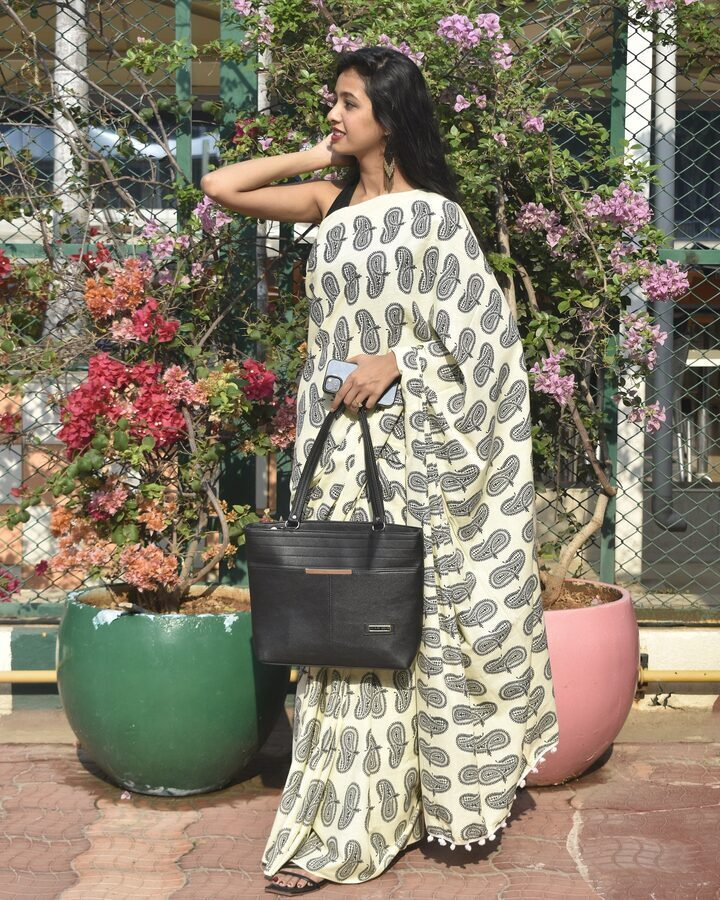

Our Story
Rooted in Mysuru,
woven with pride
Thejaswini is a celebration of the traditional saree — not merely as clothing, but as a living expression of Karnataka's culture, craftsmanship, and spirit. Born in Mysuru, the City of Palaces, we document and showcase the sarees that define our heritage.
From the Dasara procession to the riverbank at sunset, every photograph here is taken at a real Mysuru landmark. This is our city. These are our sarees.
Mysuru
City of Palaces
Every photo taken at a Mysuru landmark.
GI
Silk Heritage
Celebrating GI-certified Mysuru silk tradition.
Pure
Handloom
Woven on traditional fly-shuttle looms.
Zari
Gold Thread
Real gold and silver zari borders.